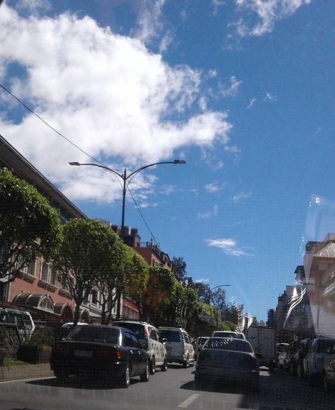
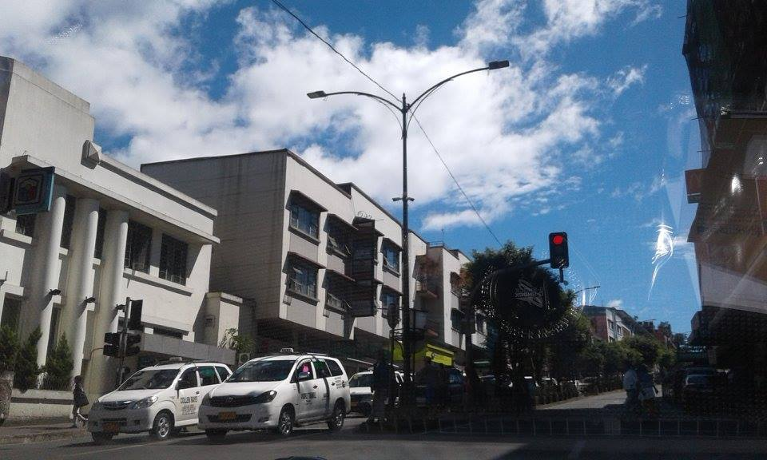
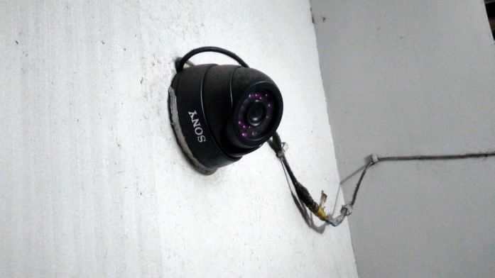
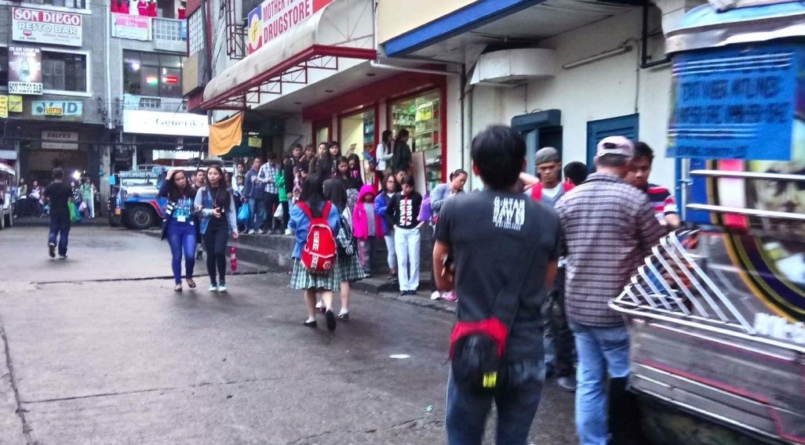

Traffic


Traffic is one of the problems that people in baguio encounter. We mostly
experience this on long weekends, holidays and Panagbenga Festival.
Causes of traffic:
1. Lack of parking facilities.
2. Inappropriate parking.
3. Lack of traffic enforcers.
4. Large numbers of vehicles.
CCTV

Closed-circuit television is installed had been one of the best evidence
for crimes that had been committed. A lot of criminals had been caught
because of these. In Baguio lots of these are now installed mostly in
crowded places where lots of pickpockets’ are located. Most of the streets
here in baguio, especially in town proper has CCTV.
Jeepney

Jeepney is the cheapest transportation here in Baguio. And because of that
passengers need to fall in line and wait for their turn before they can enter.
Growing population in Baguio resulted to longer lines of passengers.
Number Coding
Number coding scheme is one of the ordinances here in Baguio City. This is strictly
implemented to lessen the number of vehicles per day and to control the traffic here
in Baguio City. This is being implemented by the time of 7am to 7pm from Monday to Friday.
This can be suspended by the advisory of the mayor. If you will violate this ordinance, you
are obliged to pay 500 pesos to get your license.
The car is prohibited if the plate number ends with these:
Justice Hall (Bulwagan ng Katarungan)


BAGUIO FIRE STATION


BAGUIO CITY POLICE OFFICE


BAGUIO CITY HALL